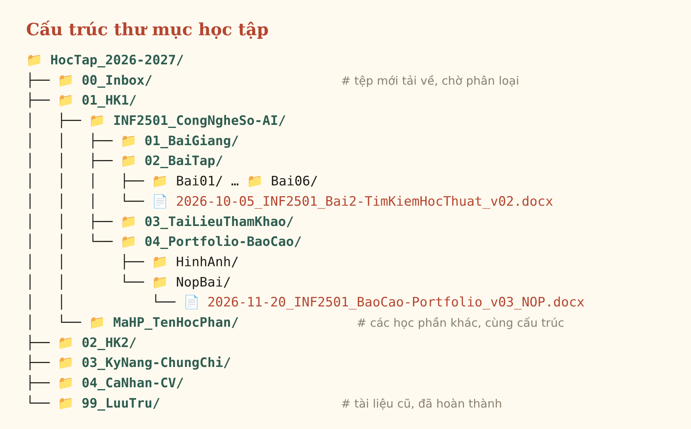

aMục tiêu bài tập
Thiết lập một hệ thống thư mục học tập khoa học và bộ quy tắc đặt tên tệp thống nhất, giúp tìm kiếm nhanh, tránh trùng lặp phiên bản và sao lưu an toàn.
Kỹ năng được rèn luyện:
- Tạo, đổi tên, di chuyển, sao chép, xóa tệp và thư mục
- Tổ chức dữ liệu theo cấu trúc phân cấp
- Đặt tên tệp nhất quán, có quản lý phiên bản
- Sao lưu dữ liệu lên đám mây (Google Drive)
bTóm tắt quá trình thực hiện
Các bước thực hiện
- Rà soát toàn bộ tệp học tập đang nằm rải rác ở Desktop, Downloads và Zalo; liệt kê các nhóm tài liệu chính (bài giảng, bài tập, tài liệu tham khảo, sản phẩm).
- Thiết kế cây thư mục 4 cấp: Năm học → Học kỳ → Học phần → Loại tài liệu. Dùng tiền tố số (00_, 01_, 99_) để cố định thứ tự hiển thị.
- Xây dựng quy tắc đặt tên: YYYY-MM-DD_MaHP_NoiDung_vXX.duoi — không dấu, không khoảng trắng, ngày theo chuẩn ISO để sắp xếp đúng thứ tự thời gian.
- Tạo cấu trúc thư mục tự động bằng tệp lệnh (tao-thu-muc.bat cho Windows) để tránh gõ sai; di chuyển và đổi tên các tệp cũ theo quy tắc mới.
- Bật đồng bộ thư mục gốc với Google Drive for Desktop; áp dụng quy tắc sao lưu 3-2-1 (3 bản, 2 thiết bị lưu trữ, 1 bản ngoài máy).
Công cụ đã sử dụng
| Công cụ | Mục đích sử dụng |
|---|---|
| Windows File Explorer | Tạo, sắp xếp, đổi tên thư mục và tệp |
| Google Drive for Desktop | Đồng bộ và sao lưu đám mây |
| Claude (Anthropic) | Gợi ý cấu trúc thư mục và viết tệp lệnh tạo thư mục tự động; sinh viên kiểm tra, chạy thử và điều chỉnh |
Sử dụng AI: Gợi ý cấu trúc thư mục và viết tệp lệnh tạo thư mục tự động; sinh viên kiểm tra, chạy thử và điều chỉnh.
Khó khăn & cách giải quyết
| Khó khăn | Cách giải quyết |
|---|---|
| Tên tệp có dấu tiếng Việt và khoảng trắng gây lỗi khi tải lên một số hệ thống, đường dẫn bị mã hóa thành %20. | Quy ước viết không dấu, dùng gạch dưới (_) ngăn cách thành phần và gạch nối (-) trong cùng thành phần. |
| Nhiều phiên bản "final", "final2", "final-moi-nhat" gây nhầm lẫn. | Bỏ hẳn chữ "final", đánh số phiên bản v01, v02…; bản nộp thêm hậu tố _NOP. |
cSản phẩm cuối cùng
Cấu trúc thư mục học tập

Quy tắc đặt tên tệp
Mẫu chung: YYYY-MM-DD_MaHP_NoiDung_vXX.duoi
| # | Quy tắc | Lý do |
|---|---|---|
| 1 | Viết tiếng Việt không dấu, không khoảng trắng | Tránh lỗi đường dẫn khi tải lên web, gửi email |
| 2 | Dùng _ ngăn cách thành phần, - nối từ trong cùng thành phần | Dễ đọc, dễ tách thông tin |
| 3 | Ngày đặt đầu, dạng YYYY-MM-DD | Tệp tự sắp xếp đúng thứ tự thời gian |
| 4 | Có mã học phần (ví dụ INF2501) | Tìm nhanh bằng ô tìm kiếm của hệ điều hành |
| 5 | Phiên bản v01, v02…; bản nộp thêm _NOP; không dùng chữ “final” | Không nhầm lẫn giữa các bản |
| 6 | Thư mục bắt đầu bằng số 00_ … 99_ | Cố định thứ tự hiển thị |
Ví dụ áp dụng
Truoc: Bai tap chuong 2 (final) moi nhat.docx Sau: 2026-10-05_INF2501_Bai2-TimKiemHocThuat_v02.docx Truoc: baocao cuoi ky.docx Sau: 2026-11-20_INF2501_BaoCao-Portfolio_v03_NOP.docx
Tạo thư mục tự động & sao lưu
Tải tệp lệnh: tao-thu-muc.bat (Windows) · tao-thu-muc.sh (macOS/Linux). Thư mục gốc được đồng bộ bằng Google Drive for Desktop, áp dụng quy tắc sao lưu 3-2-1: 3 bản sao, trên 2 loại thiết bị, 1 bản lưu ngoài máy.
Minh chứng
✍ Chèn ảnh chụp màn hình File Explorer trên máy của bạn sau khi chạy tệp lệnh (assets/img/bai1-explorer.png)